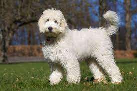

Os labradoodles são cães híbridos: criados pela mistura entre labradores e poodles, raças consideravelmente diferentes. O resultado é um cão com um porte médio, com estatura perfeitamente entre os tamanhos das duas raças, além de pelagem singular, repleta dos cachos que são característicos do Poodle, com as cores tradicionais de um Labrador.
A mistura das duas raças pode fazer com que os labradoodles variem muito, assim, alguns ficam mais parecidos com labradores, enquanto outros são mais similares aos poodles. No geral, é difícil determinar exatamente o tipo de pelo do labradoodle, ou mesmo suas cores exatas, justamente por conta desse caráter híbrido. Como dito anteriormente, os Labradoodles são cães híbridos, que resultam da mistura de duas raças diferentes. Por conta disso, é difícil determinar, exatamente, quais são suas características temperamentais. Dessa forma, os resultados dependem muito de quem são os pais do filhote e de como eles foram reproduzidos. De modo geral, podemos afirmar que os labradoodles tendem a ser cães amáveis, inteligentes e bastante sociáveis. São muito adequados para famílias e são ótimos tanto com crianças quanto com pessoas idosas. Podem ser bons cães de terapia, sendo muito ágeis e prestativos na hora de ajudar seus donos, além de serem facilmente adestrados.
Alguns cachorros da raça labradoodle podem latir em excesso, especialmente em situações de empolgação e agito, como a chegada de seu dono em casa. Pode ser preciso treinar o cachorro para evitar que ele adote esse tipo de comportamento sempre que se sentir feliz. Caso seja bem adestrado, ele costuma ser capaz de compreender comandos como “silêncio”, rapidamente cessando seus latidos.
Fizemos um gráfico nivelando de 0 a 5 as características da raça, veja a baixo!
Os labradoodles precisam de, pelo menos, uma hora de exercício por dia. Gostam de correr sem coleira, por isso, uma família com um quintal amplo tende a ser o ideal para sua criação. Também são muito inteligentes e podem ficar mais felizes ao receber cuidados e brincadeiras que levem em consideração toda a sua esperteza. Assim, pode ser interessante também trabalhar em sua adestração desde cedo.
Os Labradoodles foram muito criticados inclusive pelo criador da raça, por conta de seus problemas de saúde. Eles podem ter uma série de problemas que são comuns a ambas as raças que os deram origem. São questões como a displasia de quadril, a epilepsia e também as infecções no ouvido, que são relativamente comuns. Além disso, podem ter também problemas relacionados aos olhos, como a displasia da retina. Assim, possuem uma certa tendência a perder a visão, conforme avançam em idade. Por fim, os cachorros dessa raça podem ter também a chamada Doença de Addisson, uma condição em que suas glândulas não conseguem possuir os hormônios de forma correta, causando uma série de problemas em seu metabolismo. Os labradoodles são cães hipoalergênicos que são quase auto-limpantes e que não soltam pelo, basicamente. Seus pelos não requerem tanta escovação quantos os de um Labrador, nem tanta limpeza quanto os de um Poodle. Em relação aos banhos, a cada 15 dias já são suficientes para mantê-lo com uma aparência agradável. É importante ressaltar que, devido a sua tendência a ter inflamações e dores de ouvido, é preciso tomar cuidado com as orelhas desse cachorro no momento da limpeza. Além disso, podem ser cães que requerem companhia sempre e podem ficar tristes ao ficarem sem seus donos e sem companhia por longos períodos de tempo. Se você viaja muito ou fica muito tempo fora de casa, é interessante buscar outras raças que sejam mais independentes. Mas hoje em dia existem diversos serviços e locais seguros para deixar o seu cãozinho, sabia? Através da DogHero, você pode encontrar uma hospedagem ideal com anfitriões prontos para cuidar do seu pet com o mesmo carinho e amor que ele recebe em casa!
Devem ser socializados quando são ainda filhotes, já que eles tendem a se machucar quando estão muito estressados, principalmente quando estão em contato com outros cães e mesmo sem sofrer nenhuma agressividade por parte do outro cão. Os adultos são ativos e os filhotes nem se fala. Seu tutor precisa ter cuidado com o excesso de exercícios nessa fase para não ter problemas de saúde no futuro.